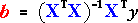

Regression model for two groups
We now consider a response variable, y, that can be modelled as a linear function of a numerical explanatory variable, x, in each of two groups. The simplest model for the resulting data allows the mean response in the second group to be δ2 higher than the corresponding mean in the first group at any value for x.
Expressing model as a GLM
The models for the two groups can be combined into a single general linear model (GLM) using an indicator variable for the groups.
The design matrix, X, for this model therefore has 3 columns — a column of 1's for the constant term in the model, a column containing xi, and a column of 0/1 that specifies the group for the observation.
Gas consumption and insulation
Data were collected in the 1960s at a house in south-east England about weekly gas consumption (in 1000 cubic feet) and the average outside temperature (in degrees Celsius) for 26 weeks before and 18 weeks after cavity-wall insulation had been installed. The house thermostat was set at 20°C throughout.
To simplify the design matrix, we only show 20 weeks of data below — 10 weeks before and 10 weeks after insulation.
The model is expressed in matrix notation below.
Click on any y-value to see how it is modelled. Observe that the indicator variable adds δ2 to the mean response in all weeks after insulation was installed.
Estimating the model parameters
As in all other GLMs, the three parameters of this model, β0, β1 and δ2, can be estimated by the values that minimise the sum of squared residuals — least squares. The least squares estimates can be expressed using matrices as

but this formula does not simplify into easily-understood formulae for the individual parameter estimates.
In practice, a computer is used to find the least squares estimates.
Graphical representation of model
This model can be respresented by two parallel lines on a scatterplot of y against x, each showing the relationship between the mean response and x for one group. The distance between the lines is δ2.
Note that the residual for any observation is the vertical distance between its cross and the line representing the model for its group. Least squares minimises the sum of squares of these distances.
Gas consumption and insulation
The scatterplot below shows the relationship between gas consumption and outside temperature for the full data set (26 weeks before and 18 weeks after cavity-wall insulation was installed), with different colours representing the two groups (before and after insulation). As might be expected, gas consumption decreases as the outside temperature increases for both groups.
The three red arrows can be dragged to adjust the model parameters.
Finally, click the checkbox Show residuals and click the button Least squares to set the parameters to their least squares estimates.
The least squares estimates mean that we estimate that:
3-dimensional representation of model (optional)
The model described above was expressed as a GLM with two explanatory variables. The second of these was an indicator variable that could only take the values 0 or 1, but both variables are treated as numerical explanatory variables in the GLM. The model can therefore be represented as a plane in 3 dimensions in the same way as other models for 2 numerical explanatory variables.
Gas consumption and insulation
The diagram below represents the least squares estimates as a plane.
Click the y-x rotation button to see the 2-dimensional diagram that was used earlier.